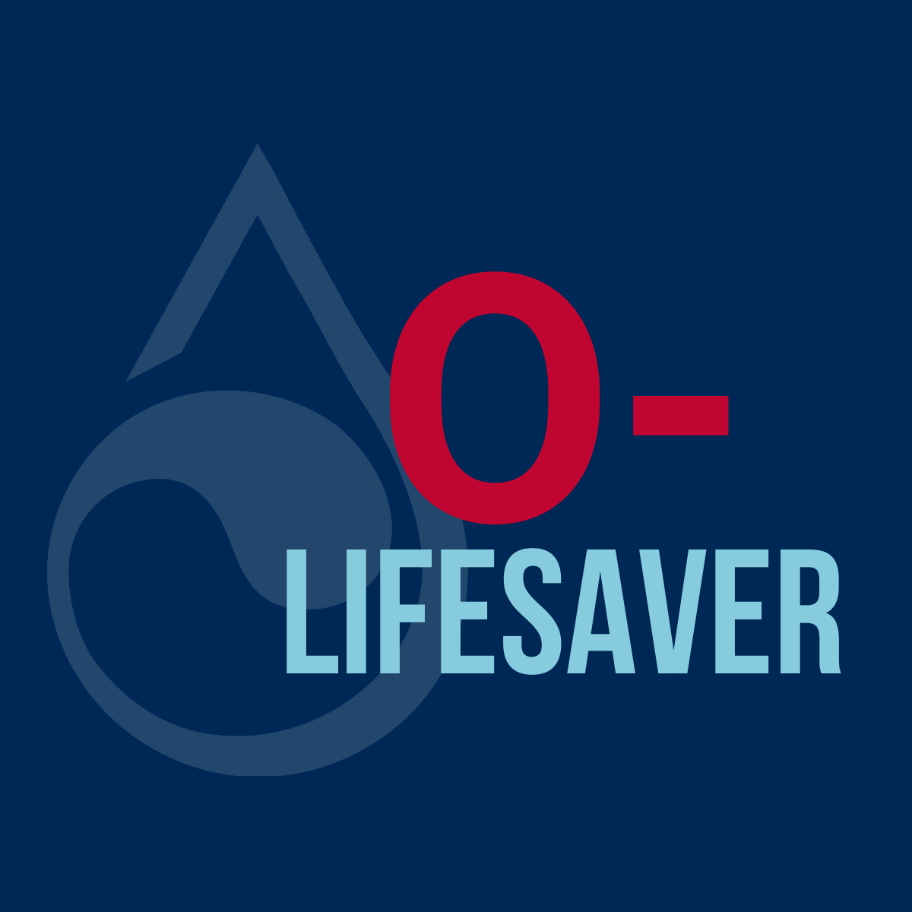
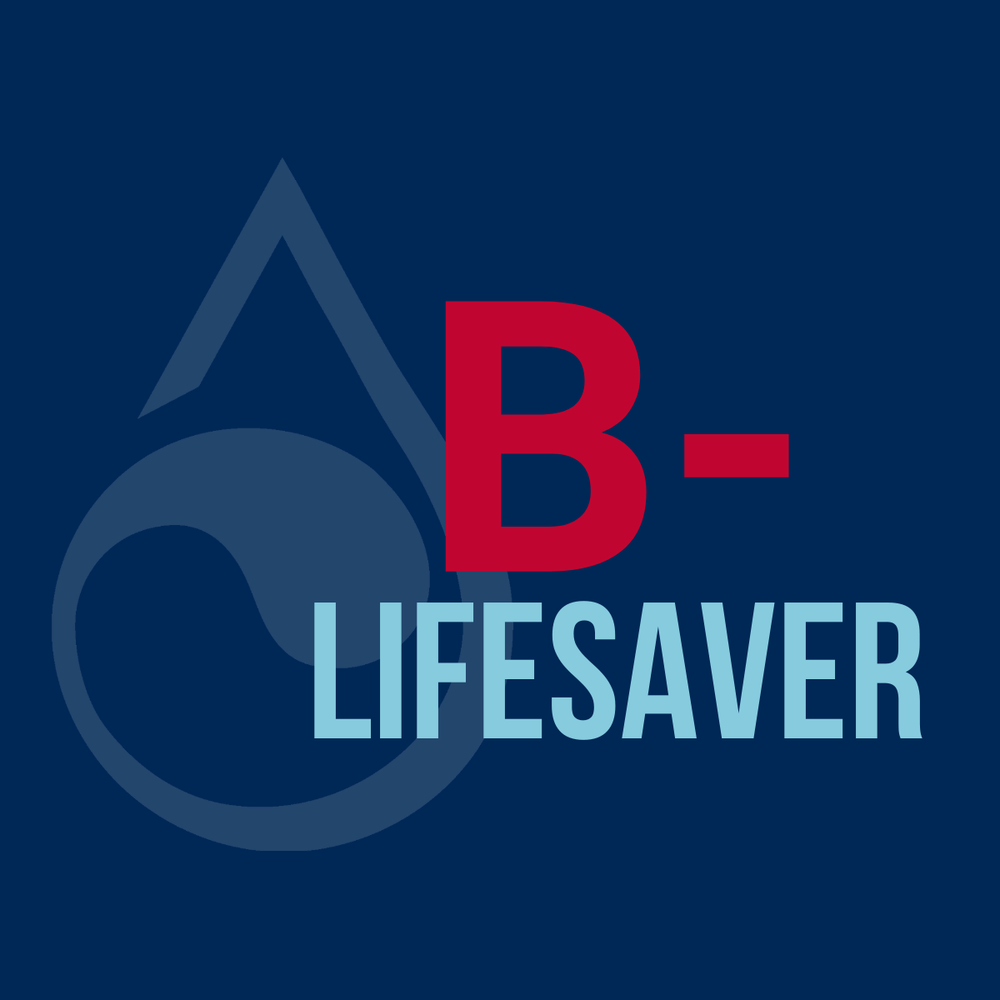

Every blood type is needed to help patients who count on lifesaving transfusions. But what you may not know is that each blood type can help in different ways. Learn more about how your blood type can help patients!
Blood is classified into different groups based on the presence or absence of specific antigens. The main blood groups are:
O Positive
Thirty-nine percent of the United States population has O-Positive blood, making it the most common blood type. Type O+ donors can help change the world by donating double red cells .
Quick Facts
Because 39% of the population have type O+ blood, hospitals transfuse it more often than other blood types.
Preferred donation methods: double red blood cell, whole blood, and platelet.
Types O, A, B and AB positive can receive O+ red cells,(except childbearing aged females of types O-, A-,B-and AB).
Type O+ can ONLY receive types O+ and O-, and only type O+ and O- can receive O+ plasma.
The Most Common

O Negative
Only 9% of the population has Type O- blood, yet it is the blood type in the highest demand. Type O- donors can help change the world by donating double red cells (an apheresis procedure that takes twice as many red blood cells).
The Universal Donor
Type O-Negative donors are universal donors. This means that their red blood cells can be transfused to any patient, regardless of the recipient's blood type. In the case of an emergency, doctors often do not have time to determine the blood type of the patient and depend on Type O blood for trauma patients and accident victims.
Quick Facts
7% of the population is type O-.
O- is the highest in-demand blood type because anyone can receive O- red blood cells, although O- plasma can only be transfused to another type O.
Type O- red cells can be used for any patient but are especially needed for emergencies, for babies, and for those with weakened immune systems.
Preferred donation methods: double red blood cell and whole blood.
Doctors depend on type O blood for trauma patients and accident victims.
Although anyone can receive O- blood cells, type O- can only receive type O- blood.
A Positive
Type A+ donors can help change the world by donating whole blood and by donating platelets (an apheresis procedure that takes longer but often goes to cancer patients). And Type A and AB plasma are often used for trauma patients and accident victims.
Quick Facts
32% of the United States population is A+, making it one of the most-transfused blood types.
Type A+ is in high demand to treat cancer patients and premature babies.
In an emergency, doctors depend on type A and AB plasma for trauma patients and accident victims.
Preferred donation methods: platelet and whole blood.
Only types A and AB+ can receive type A+, but A+ platelets can go anywhere (except childbearing aged females of types O-, A-, B- and AB-).
Type A+ can receive types A, O+ and O-.
Second Most Common
A Negative
Type A- donors can help change the world by donating whole blood and double red blood cells. And Type A and AB plasma are often used for trauma patients and accident victims.
Quick Facts
Only 6% of the population are type A-.
In an emergency, doctors depend on type A and AB plasma for trauma patients and accident victims.
Preferred donation methods: double red blood cell and whole blood.
Only types A and AB can receive type A-.
Type A- can receive types A and O-, which is just 13% of the population.
Negative but needed
B Positive
Type B+ donors can help change the world by donating blood (called "whole blood") or platelets (an apheresis procedure that takes longer but often goes to cancer patients).
Type B+ can receive Types B and O both positive and negative.
Quick Facts
11% of the United States population is B+.
Preferred donation methods: platelet and whole blood.
B+ platelets are in high demand because anyone can use them(except childbearing aged females of types O-,A-, B-and AB-).
Type B+ and AB+ can receive type B+ red cells while type B and O can receive type B+ plasma.
B+ can receive positive and negative of both types B and O.

B Negative
Only 2% of the United States population has B Negative blood. B- donors can help change the world by donating blood (called whole blood) or donating double red blood cells (an apheresis procedure that takes twice as many red blood cells).
Quick Facts
2% of the United States population is B-.
Donated blood is often transfused just three days after your donation.
Preferred donation methods: double red cell and whole blood.
Only types B and AB can receive type B-.
Type B- can receive types B and O negative, which is only 9% of the population.
More Rare And Needed Type
AB Positve
Only 4% of the United States population has AB Positive blood. AB+ donors are universal plasma and platelet donors, meaning anyone can receive their plasma and platelets. They can help change the world by donating plasma and platelets.
Quick Facts
4% of the United States population is AB+.
AB plasma can be used for any patient but is especially needed for emergencies, for babies, and for those with weakened immune systems.
Preferred donation methods: plasma and platelet.
Type AB+ can receive any blood type.
The Universal Recipient
AB Negative
Type AB- is the rarest of all the blood types, with just 1% of the population having it. AB- donors are the universal plasma and platelet donor, meaning any patient can receive their plasma and platelets.
Quick Facts
Just 1% of the United States population is AB-.
Only patients with AB positive or negative can receive AB- red cells.
AB plasma can be used for any patient but is especially needed for emergencies, for babies, and for those with weakened immune systems.
Preferred donation methods: plasma and platelet.
Anyone can receive AB- plasma and platelets!
Type AB- can receive negative types A, AB, B and O which is only 18% of the population.
The least common
Rh Factor
Each blood type can be either Rh-positive (+) or Rh-negative (-), depending on the presence of the Rh antigen.
Factor and blood type
If your blood has the Rh factor protein, you're Rh positive.
If your blood doesn't have the Rh factor protein, you're Rh negative.
The "+" or "–" after your blood type refers to Rh positive or Rh negative.